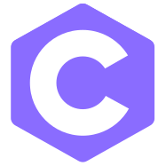
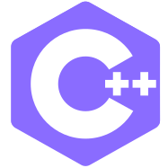
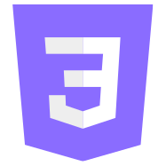
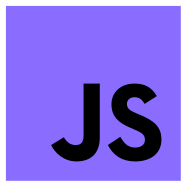
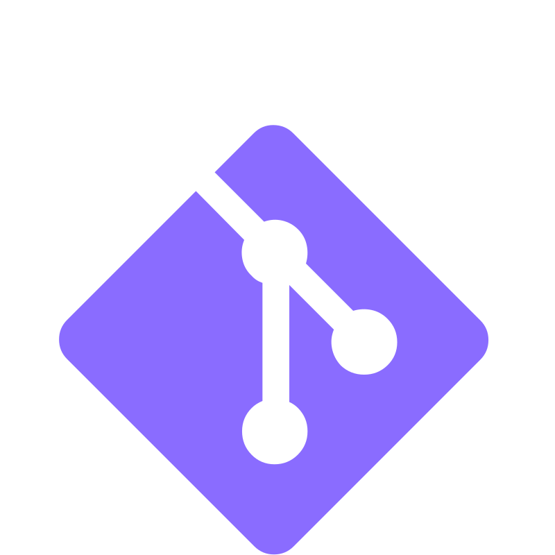

Hi, Alex here
Rosario Alexandros Morabito
I am a 15-year-old developer and roboticist building the infrastructure for the next generation of STEM learners in Greece. I operate at the edge where software architecture meets mechanical engineering, creating solutions that function as force multipliers for those without traditional guidance.
Technology isn't just about syntax; it’s about accessibility. My mission is to tear down the barriers to entry in STEM, building tools that allow students to shortcut the noise and start shipping projects immediately.
The Background
[VERSION 1.0]: My obsession with the virtual world didn't start with professional intent, it started with pure curiosity. That shifted during my first year of high school. A mentor gave me a directive that re-routed my career path: "Stop treating code and hardware as separate entities. Master the whole machine." That moment turned my focus from simple abstraction to full-stack integration.
[VERSION 2.0]: Since then, my education has been a self-driven pursuit of technical depth. Graduating from Harvard’s CS50 provided the architectural skeleton, but my real training happens in the dirt deep diving into The Odin Project and building my own rigs from raw components to understand the computing environment at the metal level.
[CORE PROJECT]: Addressing the "STEM desert" in Greece. My final project, stemnet.gr, isn't just a website; it’s a localized network built on a custom SQL backbone. I designed it to solve a specific, real-world bug: the lack of accessible, community-vetted resources for students in my region. It’s a self-sustaining ecosystem for events, resources, and shared knowledge.
Capabilities & Track Record
National Greek MIT Race Car Competition
Secured 2nd place nationwide. This wasn't just a competition; it was an exercise in high-stakes engineering. I had to bridge the gap between theoretical torque calculations and real-world friction constraints, iterating firmware under pressure to maximize performance.
Robotics & Systems Architecture
I design automated systems from the ground up. I don't just call libraries; I write custom control loops, bridge hardware-software communication protocols, and optimize firmware to solve physical problems with surgical precision.
SYSTEM_INPUT // FUEL
Coding requires a specific rhythm. My workflow is driven by a chaotic but calculated soundscape: from the heavy, raw energy of Metallica and industrial metal to the structured, syncopated logic of Daft Punk and disco. Whether I’m headbanging to Tame Impala or analyzing complex logic, dynamic audio is the clock speed of my development process.
Technical Skills
Languages


Frontend


Backend
Tools


Contact & Channels
Open a secure channel or track my latest builds